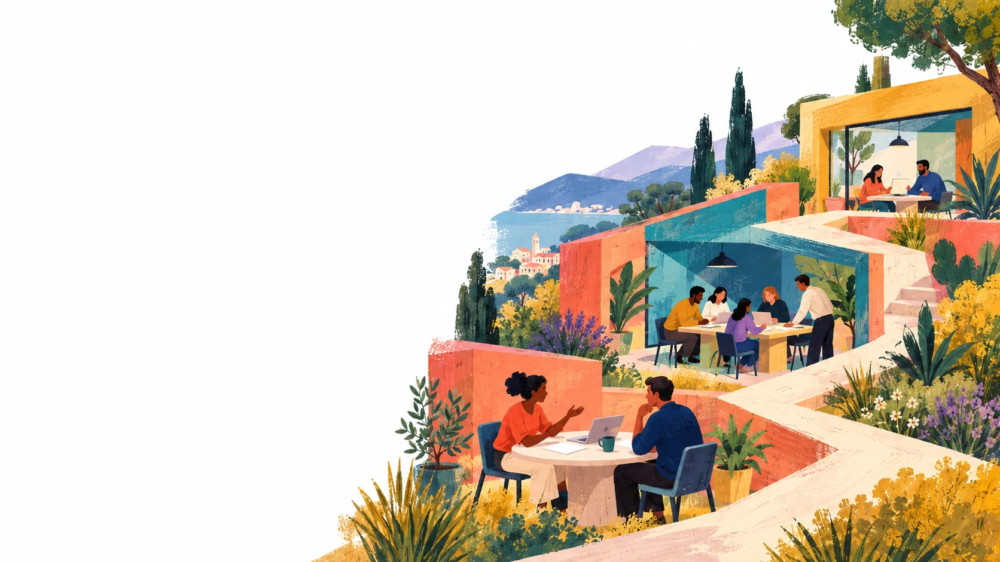

Propel recruits the people your brief needs, organises delivery and records the agreed outputs. Community leaders provide a trusted route to participants; programme and local partners support the work where needed.
Discuss your brief

Your goal
Who do you need to reach? What should they do? What would count as a useful result?
Those questions shape the audience, programme and measurement. A course completion, a project submission, a product test and a specialist hire each need a different delivery plan.
From requirement to delivered output
One integrated capability, end to end. The same system repeats for your next requirement.
Access
Reach the right people
1FindMap communities and sourcing routes against the requirement.
2VerifyConfirm identity, skills and relevant experience.
3QualifyAssess against the domain, language or geography the work needs.
Operations
Run the work
4ActivateOnboard contributors with clear instructions and tools.
5ManageCoordinate participants, support and progress day to day.
6Generate / collectProduce data, evaluations or research input in managed workflows.
Output
Deliver something usable
7EvaluateReview outputs against your criteria.
8QAQuality-check throughout, not only at the end.
9DeliverHand over agreed outputs and reporting.
Our delivery team
Communities and their leaders
The relationships that connect the brief to people with relevant interests, experience and skills.
Learning partners
Curriculum, facilitation and assessment support where the programme involves skill development.
Infrastructure partners and local operators
The practical arrangements that make participation and delivery possible in each market.
Propel's platform and delivery team
Participant coordination, programme workflows and records of progress and work delivered.
The mix changes with the brief. Propel's role is to make those parts work together.
What you bring
Your objective, audience requirements, product or programme knowledge, and the access participants need to take part. For learning programmes, that may include curriculum. For testing, it includes the product and scenarios to explore.
What Propel delivers
A scoped programme, participant recruitment, coordination and support, agreed outputs and reporting. Roles, approvals and responsibilities are set before the programme begins.
Who does what
Responsibilities are agreed per brief
Your teamObjective, content/access and review criteria→ Brief and access
PropelRecruitment, coordination, programme support and delivery records→ Programme coordination
Community partnersA relevant route to participants→ Participant recruitment
Your team + PropelReview the agreed work and decide next steps→ Outputs and reporting
Engagement options
Comparison of engagement options
Compare
A focused project
A complete programme
Continuing activation
The work
A specific research question, test cycle, recruitment need or activation brief with a defined finish.
A coordinated learning pathway, developer initiative or multi-market activation with several stages.
A planned series of activities that supports community participation and product engagement over time.
Planning approach
Planned around one defined finish
Planned across several coordinated stages
Planned as a recurring series of activities
How scope is agreed
Delivery, responsibilities and measurement agreed before launch
Delivery, responsibilities and measurement agreed before launch
Delivery, responsibilities and measurement agreed before launch
Pricing
Scoped to the project
Scoped to the programme
Scoped to the ongoing work
{{ s.name }}
The work
{{ s.work }}
Planning approach
{{ s.plan }}
How scope is agreed
Delivery, responsibilities and measurement agreed before launch
Pricing
{{ s.price }}
Pricing is scoped to the work. We agree delivery, responsibilities and measurement before launch.
Reporting
Depending on the programme, reporting can cover recruitment, participation, completion, project output, user feedback, certification or work matches.
Programme reportReport contentsAudience · Work · Next steps
Report contents
{{ f.k }}
{{ f.v }}
Participant tasks
A Quest gives a participant a clear task and a clear finish: test a workflow, complete a learning module, review documentation or submit structured feedback. Where relevant, Quests make progress visible and give your team a consistent way to collect the work.
The participant submits a task record, observations and supporting screenshots. Your team receives feedback tied to a specific workflow, organised for review.
Product-testing Quest
“Create an account and complete your first project. Record where you hesitate, capture any error and explain what you expected to happen.”
Task record
Steps completed in the workflow
Observations
Where the participant hesitated and what they expected
Evidence
ScreenshotError capture
Review
Organised for your team, tied to the workflow
Common questions
{{ q.q }}+
{{ q.a }}
Start a conversation
Tell us the outcome, the audience and the timing. We'll help shape the programme around them.